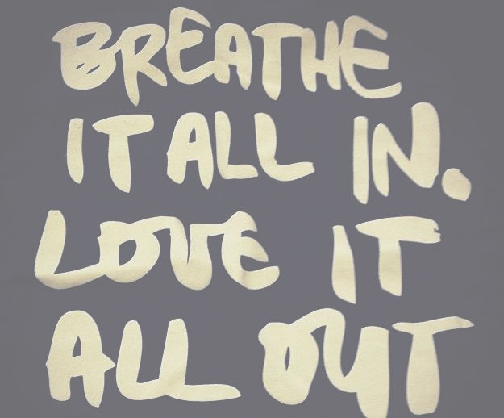

My lack of experience of compassionate leadership?
I don’t think i have truely experienced compassionate leadership to date. I have no doubt that implementing such an approach would be beneficial to all involved, and i look forward to finding this in the future. On the flip side i can certainly say i have worked for people who don’t place this as valuable practise. Being on the receiving end of bad interpersonal management which lacks compassion does nothing but harbour resentment, creates lack of motivation and frustration.
Multiplying goodness meditation
To me this practise was all about straight forward non judgemental kindness to others, and i would like to think at a high level it’s something i practise without being so specific. Taking the time to follow the steps just made this thoughts louder in my conscious mind - which can’t be a bad thing. It did make me wonder about how this can actually help others if they don’t want to be helped………and my conclusion is that if it can’t help, it also can’t do any harm and therefore there is nothing to lose by praising the meditation.
Tonglen meditation - my thoughts.......
I tried this meditation out and found it to be a step up in intensity from the multiplying goodness meditation. With regular practise i would be confident that it would prove to that the least enlightening and helpful to myself, and perhaps initiate profound changes in how to help myself and others too.

How the SCARF model applys to my Phase 0 experience so far, and how will it apply to bootcamp?
Status
“Status is about relative importance, pecking order, or seniority”.
phase 0 status hasn’t been much of a thing i’ve considered, and i image that it’s mostly due to the fact that as of yet we have been working solo in our own environments, which sets a false illution that we are just us, not a collective. I imagine in phase one this could easily change, has states may feel more ‘threatened’ amongst a group of others trying to achieve the same outcome. But the rational brain is good at balancing that out by reminding me we are really all in this together and all want the best for all of us.
Certainty
“Uncertainty takes away valuable brain resources. Larger uncertainties can be highly debilitating.”
Uncertainty really is the biggest thing i think i have faced so far during phase 0. Basically i feel like everything is an uncertainty, from knowing if i am capable to do this, to how i will manage in my personal circumstances, to knowing if i will find a job at the end. It has certainly taken up brain power and space in my head. What i hope will come from phase one is this to either not grown any bigger, or decrease slightly as my confidence grows and my abilities improve.
Autonomy
“Autonomy is the perception of exerting control over one’s environment “In other words, it’s not the stress itself that gets to you; it’s the feeling of helplessness in the face of that stress.”
Second to certainty, autonomy is another big factor that feels consuming so far in phase 0. There have certainly been plenty of times in the past 9 weeks i have not felt i’ve had a huge amount of control over my environment - from house moves to power cute, and lack of wi-fi, all these things can lead to feeling a bit helpless! I don’t yet know how this will play out in phase one, i am hoping it will be less of an issue, although even exterior factors such as public transport and rush hour traffic may play a role in this…
Relatedness
“Relatedness is the perception of whether another person is a “friend” or a “foe.”
I think this is something i really try and listen to my rational brain about. Once i have communicated with someone, even a formal or informal hello i feel happy. i like to assume people are good until proven otherwise, and i will continue to approach phase one like this.
Fairness
“Humans are the only animals known to voluntarily injure their own self-interests to punish the perceived unfairness of others.”
Fairness is important to me, retreated fairly by other, and implementing fairness myself. If i feel i haven’t been treated fairly i would try my best to voice this in a diplomatic way rather than cutting my nose off to spite my face. But that is not to mistake fairness or kindness for weakness, i would certainly be clear in communications if i felt wronged by another, but in a kind way. I would do the same for others too.
Excerpt From: Tan, Chade-Meng. “Search Inside Yourself: The Unexpected Path to Achieving Success, Happiness (and World Peace).” iBooks.